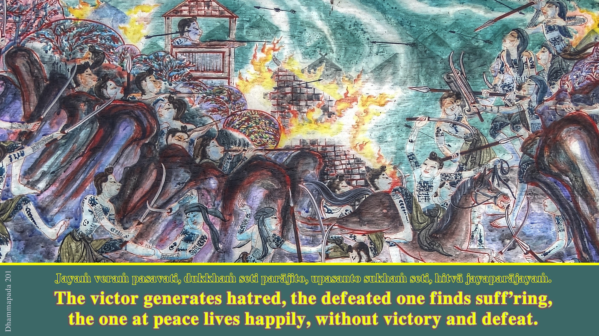

Dhammapada
Si l’on doit ne retenir qu’un seul thème et désigner celui qui soutient tout l’ouvrage, ce ne peut être que le nirvana, l’extinction des désirs qui conduit à la libération définitive.
La foi doit être une conviction fondée sur une compréhension approfondie de la voie choisie.
Thèmes fondateurs de l’enseignement bouddhique:
1 Le caractère impermanent et illusoire du monde.
2 La nature douloureuse de l’existence
3 La vanité des attachements et des désirs.
4 Le devoir de faire le bien et d’éviter le mal.
5 La nécessité d’être son propre maître et son propre sauveur.
6 La possibilité de se délivrer de la souffrance.
Préface de "Dhammapada - La voie du Bouddha" (Pháp Cú)

Dans la profusion d’ouvrages que constituent les écrits canoniques du bouddhisme, le Dhammapada occupe une place particulière, par sa forme littéraire comme par sa dimension compacte. Considéré comme un fleuron de cette littérature, il en est l’un des textes les plus populaires, par sa capacité à exprimer l’essence de la pensée bouddhique sous une forme simple et poétique, propre de ce fait à parler au plus grand nombre.
Dès les premières lignes d’introduction, le lecteur est conquis par cette clarté de la langue où nulle place n’est laissée à l’obscurité qu’on s’attend à rencontrer dans un écrit sur un tel sujet.
Je ne voudrais pas que l’amitié me pousse à des louanges excessives.
Cette traduction des versets du Dhammapada est une réussite.
Il y a ce style élégant et précis. Ces mots qui tombent, justes, à la bonne place dans des phrases belles, simples, à force d’être ciselées sans doute.
S’il vient à l’esprit de parler avant tout de style, c’est qu’il s’agit d’un texte poétique. Travail de recréation difficile pour le traducteur qui a su restituer à merveille la beauté que le lecteur ignorant de la langue de Bouddha imagine du texte originel.
L’introduction contient des explications très instructives.
Les notes à la fin de l’ouvrage éclairent le sens de certains mots, qui ne sont pas employés au hasard, mais dans l’acception précise de la doctrine.
On peut lire ce petit livre (182 pages, format 11 x 18) en une soirée pour se faire une idée de la pensée bouddhique, ou tout simplement le lire et le relire pour la beauté de la langue française telle qu’on l’aime dans le monde.
recension dans JR N°579 (novembre 2002)